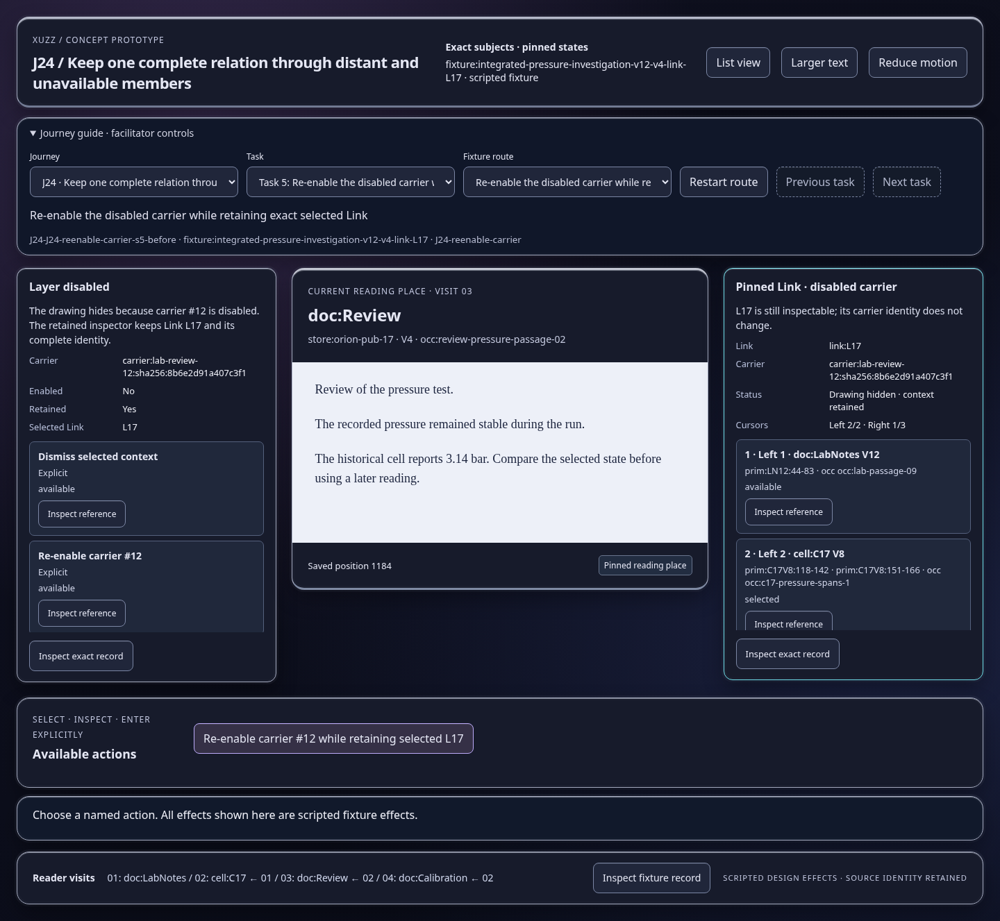
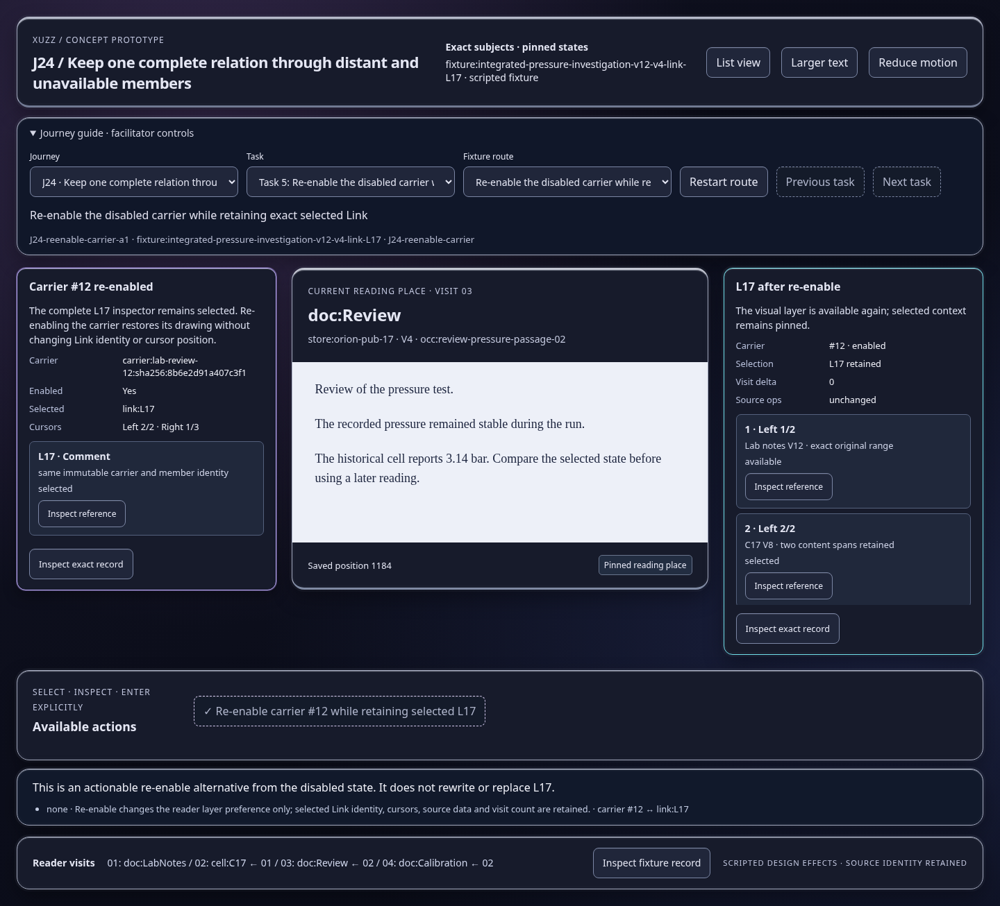

Scripted concept states; inspect the effect and identity trace. Images show actual prototype rendering.

This is an actionable re-enable alternative from the disabled state. It does not rewrite or replace L17.
Open this represented state